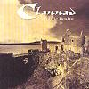

Celtic Lyrics Corner
>
Artists & Groups
>
Clannad
> Atlantic Realm

Atlantic Realm
(1989)
Tracks
:
1.
Atlantic Realm
2. Predator
3. Moving Thru
4. The Berbers
5.
Signs Of Life
6. In Flight
7. Ocean Of Light
8. Drifting
9. Under Neptune's Cape
10. Voyager
11. Primeval Sun
12. Child Of The Sea
13. The Kirk Pride